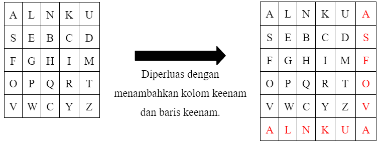
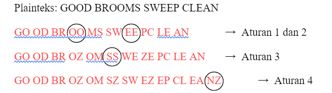
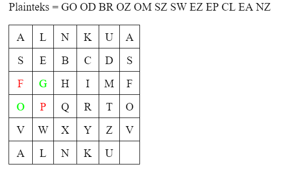

4. Playfair
Playfair Cipher adalah algoritma kriptografi dengan teknik substitusi yang caranya dengan mengenkripsi pasangan huruf (digram atau digraf), bukan huruf tunggal seperti pada cipher klasik lainnya. Tujuannya adalah untuk membuat analisis frekuensi menjadi sangat sulit sebab frekuensi kemunculan huruf-huruf di dalam cipherteks menjadi datar (flat).
Di dalam Playfair, pembentukan kuncinya dengan cara menyusun 25 huruf dalam tabel 5x5. Sebelum disusun ke dalam tabel, huruf j di dalam kunci harus dihilangkan dan huruf yang berulang juga harus dihilangkan.
Prinsip Dasar
Matriks Kunci (Key Matrix): Playfair menggunakan matriks 5x5 yang berisi huruf-huruf alfabet. Karena hanya ada 25 tempat di matriks dan alfabet memiliki 26 huruf, biasanya huruf ‘J’ akan dihilangkan. Kunci ini digunakan untuk membentuk matriks.
Pengisian Matriks: Kunci yang digunakan untuk pengisian matriks harus berisi semua huruf yang tidak berulang. Jika ada huruf yang berulang, salah satunya diabaikan. Setelah semua huruf dari kunci dimasukkan, sisa tempat di matriks diisi dengan huruf alfabet lainnya yang belum digunakan.
Pemisahan Teks: Teks yang akan dienkripsi dipisahkan menjadi pasangan huruf (digraf). Jika ada pasangan yang berisi dua huruf yang sama, satu huruf dummy seperti ‘X’ atau ‘Q’ dimasukkan di antara mereka.
Pemrosesan Plainteks: Pesan yang akan dienkripsi diatur terlebih dahulu sebagai berikut:
- Ganti huruf J (bila ada) dengan I.
- Tulis pesan dalam pasangan huruf (bigram).
- Jangan sampai ada pasangan huruf yang sama. Jika ada, sisipkan Z di tengahnya.
- Jika dalam huruf ganjil, tambahkan huruf Z di akhir.
Aturan Enkripsi:
- Jika dua huruf terdapat pada baris kunci yang sama maka tiap huruf diganti dengan huruf di kanannya.
- Jika dua huruf terdapat pada kolom kunci yang sama maka tiap huruf diganti dengan huruf di bawahnya.
- Jika dua huruf tidak pada baris yang sama atau kolom yang sama, maka huruf pertama diganti dengan huruf pada perpotongan baris huruf pertama dengan kolom huruf kedua. Huruf kedua diganti dengan huruf pada titik sudut keempat dari persegi panjang yang dibentuk dari 3 huruf yang digunakan sampai sejauh ini.
Contoh Soal
Untuk lebih jelasnya, kita bisa membahas contoh soal berikut ini: “GOOD BROOMS SWEEP CLEAN” yang akan dienkripsi menggunakan metode Playfair dengan kunci “JALAN NAKULA SEBELAS” Maka proses enkripsi nya adalah sebagai berikut:
Proses Penyandian
Pertama kita buat matrix kunci 5x5 dari Kunci “JALAN NAKULA SEBELAS”, Kita susun kuncinya ke dalam bentuk matrix lalu kita hilangkan huruf yang berulang dan huruf J jika ada, setelah itu kita perluas Matrix kuncinya menjadi 6x6.

Kedua kita proses Plainteks dengan aturan yang ada di atas tadi:
- Ganti huruf J (bila ada) dengan I.
- Tulis pesan dalam pasangan huruf (bigram).
- Jangan sampai ada pasangan huruf yang sama. Jika ada, sisipkan Z di tengahnya.
- Jika dalam huruf ganjil, tambahkan huruf Z di akhir.

Jadi hasil akhir dari pemrosesan dari plainteks yaitu : GO OD BR OZ OM SZ SW EZ EP CL EA NZ
Selanjutnya kita akan belajar bagaimana proses enkripsi dari Plainteks yang sudah diproses terhadap Matrix kunci tadi yang sudah dibuat. dengan 3 aturan enkripsi yang ada di atas tadi.

Jadi Cipherteks yang terbentuk dari proses enkripsi adalah : FP TS CQ TV TF DV EV DW GW EK SL UX
Implementasi Pada Python
Deklarasi list abjad yang berisi huruf a-z tanpa huruf j
abjad = ['a', 'b', 'c', 'd', 'e', 'f', 'g', 'h', 'i', 'j', 'k', 'l', 'm', 'n', 'o', 'p', 'q', 'r', 's', 't', 'u', 'v', 'w', 'x', 'y', 'z']Memasukkan plaintext
plaintext_playfair = input("Masukkan teks yang akan dienkripsi: ")Menghilangkan spasi pada plaintext dan membuat plaintext menjadi lowercase
plaintext_playfair = plaintext_playfair.replace(' ','').lower()
print(plaintext_playfair)Memasukkan kunci
key_playfair = input("Masukkan kunci: ")Pemrosesan Kunci
Menghilangkan spasi pada kunci dan membuat kunci menjadi lowercase
key_playfair = key_playfair.replace(' ','').lower()
print(key_playfair)Menghapus huruf ‘j’ jika ada di kunci
key_playfair = key_playfair.replace('j', '')
print(key_playfair)Menghapus huruf yang berulang
key_result = []
for i in key_playfair:
if i not in key_result:
key_result.append(i)
print(key_result)perulangan untuk menghapus huruf yang berulang dengan menambahkan kondisi apakah huruf tersebut sudah ditambahkan ke list key_result
Menambahkan sisa huruf alphabet yang belum ada ke dalam matrix kunci
for i in abjad:
if i != 'j' and i not in key_result:
key_result.append(i)
print(key_result)Membuat matrix kunci 5x5
key_created = []
while key_result!= []:
key_created.append(key_result[:5])
key_result = key_result[5:]
for row in key_created:
print(row)Proses Enkripsi
Mengganti huruf ‘j’ yang ada di plainteks menjadi huruf ‘i’
plaintext_playfair = plaintext_playfair.replace('j', 'i')
print(plaintext_playfair)Proses pembuatan plaintext menjadi bentuk bigram atau pasangan huruf
bigram_plaintext = []
# perulangan untuk menambahkan pasangan huruf atau bigram ke dalam list bigram_plaintext
i = 0
while i<len(plaintext_playfair):
x = plaintext_playfair[i]
y = ''
# situasi jika berada di huruf terakhir di plaintext
if((i+1) == len(plaintext_playfair)):
y = 'z'
else:
y = plaintext_playfair[i+1]
# jika hurufnya keduanya sama, maka disisipkan z di tengahnya
if(x!=y):
bigram_plaintext.append(x+y)
i += 2
else:
bigram_plaintext.append(x+'z')
i += 1
print(bigram_plaintext)Penjelasan prosesnya:
bigram_plaintext = []adalah sebuah list kosong yang akan diisi dengan pasangan huruf (bigram) yang diambil dariplaintext_playfair.whileloop digunakan untuk iterasi melalui teksplaintext_playfairsampai semua huruf di teks tersebut telah diproses. Loop ini akan berlanjut selamaikurang dari panjang teksplaintext_playfair. Jadi perulangan ini digunakan untuk memproses semua huruf yang ada diplaintext_playfair.x = plaintext_playfair[i]dany = ''adalah variabel yang digunakan untuk menampung huruf bigram pertama dan kedua dengan inisiasi nilai awal itu nilai dari plaintext_playfair[i] dan string kosong.- Selanjutnya untuk pengkondisian pertama itu digunakan untuk kondisi dimana sudah sampai huruf terkahir dalam
plaintext_playfair. - Terakhir untuk pengkondisian kedua itu digunakan untuk kondisi dimana kedua hurufnya itu sama.
Proses substitusi plainteks dengan 3 aturan yang sudah di jelaskan diatas
bigram_ciphertext = []
# perulangan untuk mencari bigram ciphertex
for bigram in bigram_plaintext:
flag = False
# cek aturan 1, apakah pasangan huruf plaintext berada di baris yang sama
for row in key_created:
# jika berada di baris yang sama maka huruf yang berada di sebelah kanannya ditambahkan ke bigram ciphertext
if(bigram[0] in row and bigram[1] in row):
x1 = row.index(bigram[0])
x2 = row.index(bigram[1])
cipher_created = row[(x1 + 1) % 5] + row[(x2 + 1) % 5]
bigram_ciphertext.append(cipher_created)
flag = True
if flag:
continue
# cek aturan 2, apakah pasangan huruf plaintext berada di kolom yang sama
for j in range(5):
col = ''.join([key_created[i][j] for i in range(5)])
# jika berada di kolom yang sama maka huruf yang berada di bawahnya ditambahkan ke bigram ciphertext
if(bigram[0] in col and bigram[1] in col):
y1 = col.index(bigram[0])
y2 = col.index(bigram[1])
cipher_created = col[(y1 + 1) % 5] + col[(y2 + 1) % 5]
bigram_ciphertext.append(cipher_created)
flag = True
if flag:
continue
foundOne = False
foundTwo = False
# cek aturan 3, apakah pasangan huruf plaintext berada di baris dan kolom yang berbeda
for i in range(5):
row = key_created[i]
# jika huruf pertama dalam bigram ada pada baris urutan ke 'i'
if(bigram[0] in row):
x1 = i
y1 = row.index(bigram[0])
foundOne = True
# jika huruf kedua dalam bigram ada pada baris urutan ke 'i'
if(bigram[1] in row):
x2 = i
y2 = row.index(bigram[1])
foundTwo = True
# jika kedua posisi pasangan huruf atau bigram sudah diketahui, maka pembentukan cipher sesuai aturan ketiga dilakukan
if foundOne and foundTwo:
cipher_created = key_created[x1][y2] + key_created[x2][y1]
bigram_ciphertext.append(cipher_created)
break
print(bigram_ciphertext)Penjelasan prosesnya:
bigram_ciphertextadalah list kosong yang akan diisi dengan pasangan huruf (bigram) yang telah dienkripsi daribigram_plaintext.for bigram in bigram_plaintext:digunakan untuk iterasi melalui setiap bigram yang ada dalambigram_plaintext.flag = Falseadalah variabel boolean yang digunakan untuk menandai apakah aturan tertentu sudah dipenuhi sehingga tidak perlu memeriksa aturan lainnya untuk bigram yang sama.- Pemeriksaan Aturan 1: Baris yang Sama
for row in key_created:
if(bigram[0] in row and bigram[1] in row):
x1 = row.index(bigram[0])
x2 = row.index(bigram[1])
cipher_created = row[(x1 + 1) % 5] + row[(x2 + 1) % 5]
bigram_ciphertext.append(cipher_created)
flag = True- Loop ini memeriksa setiap baris (
row) dalam matriks kunci (key_created). - Jika kedua huruf dalam bigram (
bigram[0]danbigram[1]) berada di baris yang sama (row), maka:- Indeks masing-masing huruf dalam baris ditemukan (
x1danx2). - Huruf di sebelah kanan dari masing-masing huruf ditentukan dengan menggunakan (
index + 1) % 5untuk menangani kasus melingkar (huruf di ujung kanan). - Huruf-huruf ini kemudian digabungkan menjadi
cipher_createddan ditambahkan kebigram_ciphertext. flagdiatur keTrueuntuk menandai bahwa aturan ini telah diterapkan, dan loop berhenti memeriksa aturan lain untuk bigram ini.
- Indeks masing-masing huruf dalam baris ditemukan (
- Lanjut ke Bigram Berikutnya Jika Aturan 1 Terpenuhi
if flag:
continue- Jika
flagTrue, bigram ini sudah diproses, dan loop lanjut ke bigram berikutnya tanpa memeriksa aturan lainnya. - Pemeriksaan Aturan 2: Kolom yang Sama
for j in range(5):
col = ''.join([key_created[i][j] for i in range(5)])
if(bigram[0] in col and bigram[1] in col):
y1 = col.index(bigram[0])
y2 = col.index(bigram[1])
cipher_created = col[(y1 + 1) % 5] + col[(y2 + 1) % 5]
bigram_ciphertext.append(cipher_created)
flag = True- Loop ini memeriksa setiap kolom dalam matriks kunci (
key_created). - Setiap kolom (
col) dibentuk dengan menggabungkan huruf-huruf dari setiap baris pada indeksj. - Jika kedua huruf dalam bigram (
bigram[0]danbigram[1]) berada di kolom yang sama (col), maka:- Indeks masing-masing huruf dalam kolom ditemukan (
y1dany2). - Huruf di bawah masing-masing huruf ditentukan dengan menggunakan
(index + 1) % 5untuk menangani kasus melingkar (huruf di ujung bawah). - Huruf-huruf ini kemudian digabungkan menjadi
cipher_createddan ditambahkan kebigram_ciphertext. flagdiatur keTrue, dan loop berhenti memeriksa aturan lain untuk bigram ini.
- Indeks masing-masing huruf dalam kolom ditemukan (
- Lanjut ke Bigram Berikutnya Jika Aturan 2 Terpenuhi
if flag:
continue- Jika
flagTrue, bigram ini sudah diproses, dan loop lanjut ke bigram berikutnya tanpa memeriksa aturan lainnya. - Pemeriksaan Aturan 3: Baris dan Kolom Berbeda
foundOne = False
foundTwo = False
for i in range(5):
row = key_created[i]
if(bigram[0] in row):
x1 = i
y1 = row.index(bigram[0])
foundOne = True
if(bigram[1] in row):
x2 = i
y2 = row.index(bigram[1])
foundTwo = True
if foundOne and foundTwo:
cipher_created = key_created[x1][y2] + key_created[x2][y1]
bigram_ciphertext.append(cipher_created)
break- Loop ini memeriksa setiap baris dalam matriks kunci (
key_created) untuk menemukan posisi huruf pertama dan kedua dari bigram. - Jika huruf pertama (
bigram[0]) ditemukan dalam barisi, indeks baris (x1) dan kolom (y1) disimpan, danfoundOnediatur keTrue. - Jika huruf kedua (
bigram[1]) ditemukan dalam barisi, indeks baris (x2) dan kolom (y2) disimpan, danfoundTwodiatur ke True. - Jika kedua huruf ditemukan (
foundOnedanfoundTwo), aturan ketiga diterapkan:- Huruf di posisi silang yang berlawanan diambil dari matriks kunci:
key_created[x1][y2]dankey_created[x2][y1]. - Huruf-huruf ini digabungkan menjadi
cipher_createddan ditambahkan kebigram_ciphertext. - Loop dihentikan dengan
breakkarena bigram telah diproses.
- Huruf di posisi silang yang berlawanan diambil dari matriks kunci:
Hasil enkripsi
hasil_enkripsi = ''.join(bigram_ciphertext)
print(hasil_enkripsi)Proses Dekripsi
Memasukkan ciphertext
ciphertext_playfair = input("Masukkan teks yang akan di dekripsi: ")Proses pembuatan ciphertext menjadi bentuk bigram atau pasangan huruf
bigram_ciphertext = [ciphertext_playfair[i:i+2] for i in range(0, len(ciphertext_playfair), 2)]
print(bigram_ciphertext)Proses substitusi Cipherteks dengan 3 aturan yang sudah di jelaskan diatas
bigram_dekripsi = []
# perulangan untuk mencari bigram decrypt text
for bigram in bigram_ciphertext:
flag = False
# cek aturan 1, apakah pasangan huruf ciphertext berada di baris yang sama
for row in key_created:
# jika berada di baris yang sama maka huruf yang berada di sebelah kanannya ditambahkan ke bigram decrypt text
if(bigram[0] in row and bigram[1] in row):
x1 = row.index(bigram[0])
x2 = row.index(bigram[1])
decrypt_created = row[(x1 - 1) % 5] + row[(x2 - 1) % 5]
bigram_dekripsi.append(decrypt_created)
flag = True
if flag:
continue
# cek aturan 2, apakah pasangan huruf ciphertext berada di kolom yang sama
for j in range(5):
col = ''.join([key_created[i][j] for i in range(5)])
# jika berada di kolom yang sama maka huruf yang berada di bawahnya ditambahkan ke bigram decrypt text
if(bigram[0] in col and bigram[1] in col):
y1 = col.index(bigram[0])
y2 = col.index(bigram[1])
decrypt_created = col[(y1 - 1) % 5] + col[(y2 - 1) % 5]
bigram_dekripsi.append(decrypt_created)
flag = True
if flag:
continue
foundOne = False
foundTwo = False
# cek aturan 3, apakah pasangan huruf ciphertext berada di baris dan kolom yang berbeda
for i in range(5):
row = key_created[i]
# jika huruf pertama dalam bigram ada pada baris urutan ke 'i'
if(bigram[0] in row):
x1 = i
y1 = row.index(bigram[0])
foundOne = True
# jika huruf kedua dalam bigram ada pada baris urutan ke 'i'
if(bigram[1] in row):
x2 = i
y2 = row.index(bigram[1])
foundTwo = True
# jika kedua posisi pasangan huruf atau bigram sudah diketahui, maka pembentukan cipher sesuai aturan ketiga dilakukan
if foundOne and foundTwo:
decrypt_created = key_created[x1][y2] + key_created[x2][y1]
bigram_dekripsi.append(decrypt_created)
break
print(bigram_dekripsi)Hasil dekripsi
hasil_dekripsi = ''.join(bigram_dekripsi)
print(hasil_dekripsi)